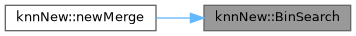
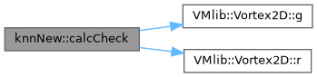
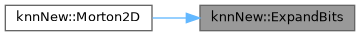
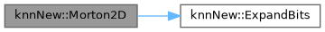
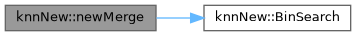

|
VM2D 1.14
Vortex methods for 2D flows simulation
|
|
VM2D 1.14
Vortex methods for 2D flows simulation
|
Functions | |
| unsigned int | ExpandBits (unsigned int v) |
| unsigned int | Morton2D (const Point2D &r) |
| void | RSort_Parallel (TParticleCode *m, TParticleCode *m_temp, unsigned int n, unsigned int *s) |
| Сортировка массива из мортоновский кодов | |
| size_t | BinSearch (const std::vector< std::pair< double, size_t > > ¤tNN, double x, int low, int high) |
| void | newSort (std::vector< std::pair< double, size_t > > &mass, std::vector< std::pair< double, size_t > > &dstKeys) |
| void | newMerge (int iii, std::vector< std::pair< double, size_t > > ¤tNN, const std::vector< std::pair< double, size_t > > &candidateNN, std::vector< size_t > &loc, std::vector< size_t > &counter, std::vector< size_t > &offset, std::vector< size_t > &counterScan, std::vector< std::pair< double, size_t > > &updateNN) |
| std::pair< bool, bool > | calcCheck (const Vortex2D &vtxi, const Vortex2D &vtxk, double maxG, double cSP, double cRBP, double epsCol, int type, double &d2) |
Variables | |
| const int | twoPowCodeLengthVar = (1 << codeLength) |
|
inline |
Definition at line 168 of file knnCPU.cpp.

| std::pair< bool, bool > knnNew::calcCheck | ( | const Vortex2D & | vtxi, |
| const Vortex2D & | vtxk, | ||
| double | maxG, | ||
| double | cSP, | ||
| double | cRBP, | ||
| double | epsCol, | ||
| int | type, | ||
| double & | d2 | ||
| ) |
Definition at line 263 of file knnCPU.cpp.

| unsigned int knnNew::ExpandBits | ( | unsigned int | v | ) |
Definition at line 53 of file knnCPU.cpp.

| unsigned int knnNew::Morton2D | ( | const Point2D & | r | ) |
Definition at line 85 of file knnCPU.cpp.

| void knnNew::newMerge | ( | int | iii, |
| std::vector< std::pair< double, size_t > > & | currentNN, | ||
| const std::vector< std::pair< double, size_t > > & | candidateNN, | ||
| std::vector< size_t > & | loc, | ||
| std::vector< size_t > & | counter, | ||
| std::vector< size_t > & | offset, | ||
| std::vector< size_t > & | counterScan, | ||
| std::vector< std::pair< double, size_t > > & | updateNN | ||
| ) |
Definition at line 211 of file knnCPU.cpp.

| void knnNew::newSort | ( | std::vector< std::pair< double, size_t > > & | mass, |
| std::vector< std::pair< double, size_t > > & | dstKeys | ||
| ) |
Definition at line 189 of file knnCPU.cpp.
| void knnNew::RSort_Parallel | ( | TParticleCode * | m, |
| TParticleCode * | m_temp, | ||
| unsigned int | n, | ||
| unsigned int * | s | ||
| ) |
Сортировка массива из мортоновский кодов
Definition at line 95 of file knnCPU.cpp.
| const int knnNew::twoPowCodeLengthVar = (1 << codeLength) |
Definition at line 48 of file knnCPU.cpp.